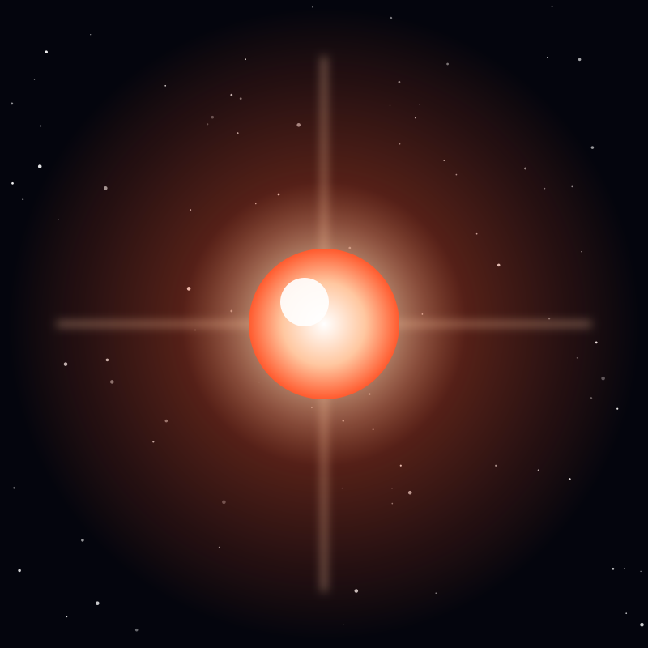

Star
Proxima Centauri
The closest star to the Sun, a cool red dwarf with at least one Earth-sized planet in its habitable zone.
Object 16 of 26

Key facts
- Distance
- 4.24 light-years (closest star)
- Radius
- 0.15 × Sun
- Mass
- 0.12 × Sun
- Spectral type
- M5.5Ve (red dwarf)
- Surface temperature
- 3,042 K
- Luminosity
- 0.0017 × Sun
- Known planets
- Proxima b (plus candidate c)
- Age
- ~4.85 billion years
Overview
Proxima Centauri is the closest star to the Sun, at 4.24 light-years — about 40 trillion kilometres. Despite being our nearest neighbour it is far too faint to see without a telescope, shining at magnitude 11 in the constellation Centaurus.
It is a red dwarf of spectral class M, with less than a seventh of the Sun's mass and a surface temperature of about 3,042 K. Red dwarfs are the most common stars in the galaxy, and because they burn fuel so slowly Proxima will outlive the Sun by trillions of years.
The Alpha Centauri System
Proxima is gravitationally bound to the Alpha Centauri binary — a pair of sun-like and orange stars that are the third-brightest points in the night sky. From their perspective Proxima is a distant companion orbiting about 13,000 astronomical units away.
The three together form the nearest star system to our own. Alpha Centauri A and B would be easily visible to the naked eye from a planet around Proxima, hanging in the sky as an exceptionally bright double star.
Proxima b
In 2016 astronomers announced Proxima b, a planet of at least 1.16 Earth masses orbiting within the star's habitable zone every 11.2 days. It is the nearest known exoplanet to Earth.
The planet is probably tidally locked, with one hemisphere in permanent day, and it receives about 65 percent of the light Earth gets. Whether it retained an atmosphere is unknown, and it is the single most studied target in the search for nearby habitable worlds.
Flares & Exploration
Proxima is a flare star. It blasts out eruptions far larger than anything the Sun produces — including one in January 2011, the brightest ever recorded on Proxima, roughly ten times more energetic than the largest solar flare.
Such events could strip a planet's atmosphere over time. Even so, Proxima is the target of Breakthrough Starshot, a concept to push tiny light-driven sails to 20 percent of light speed, reaching the system in about 20 to 25 years.